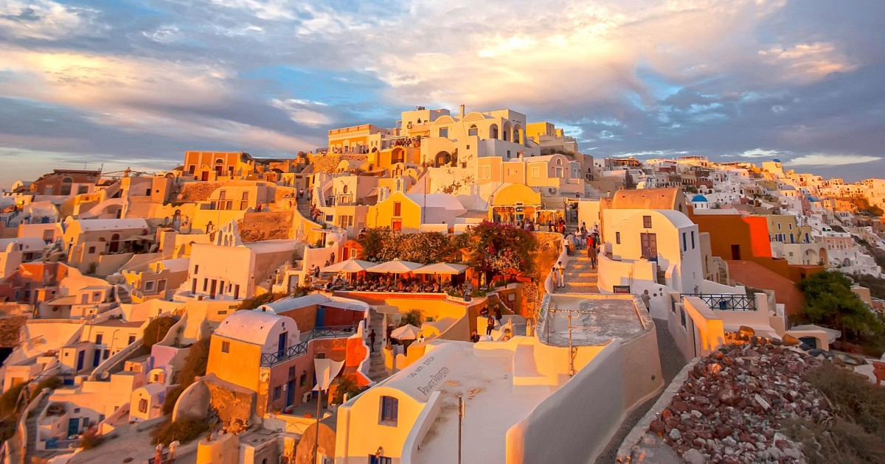
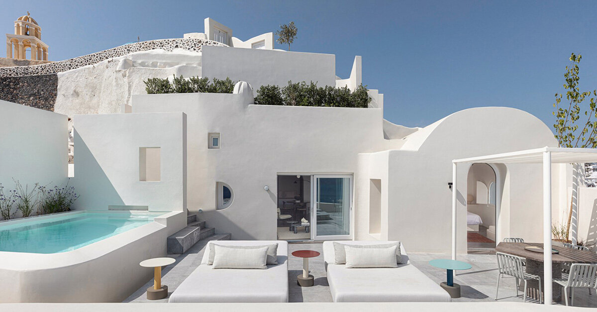
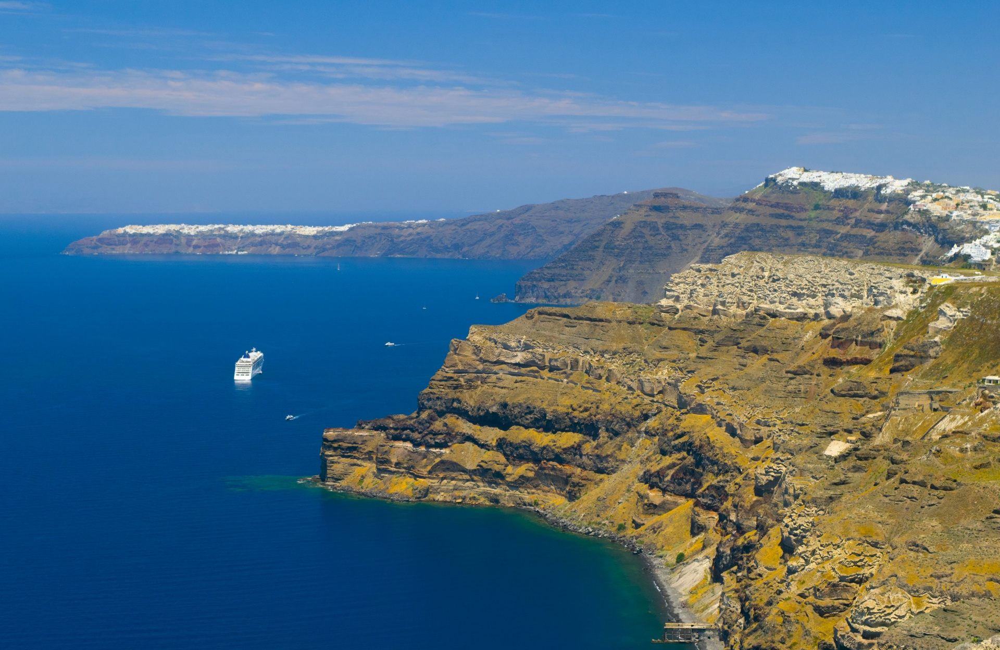
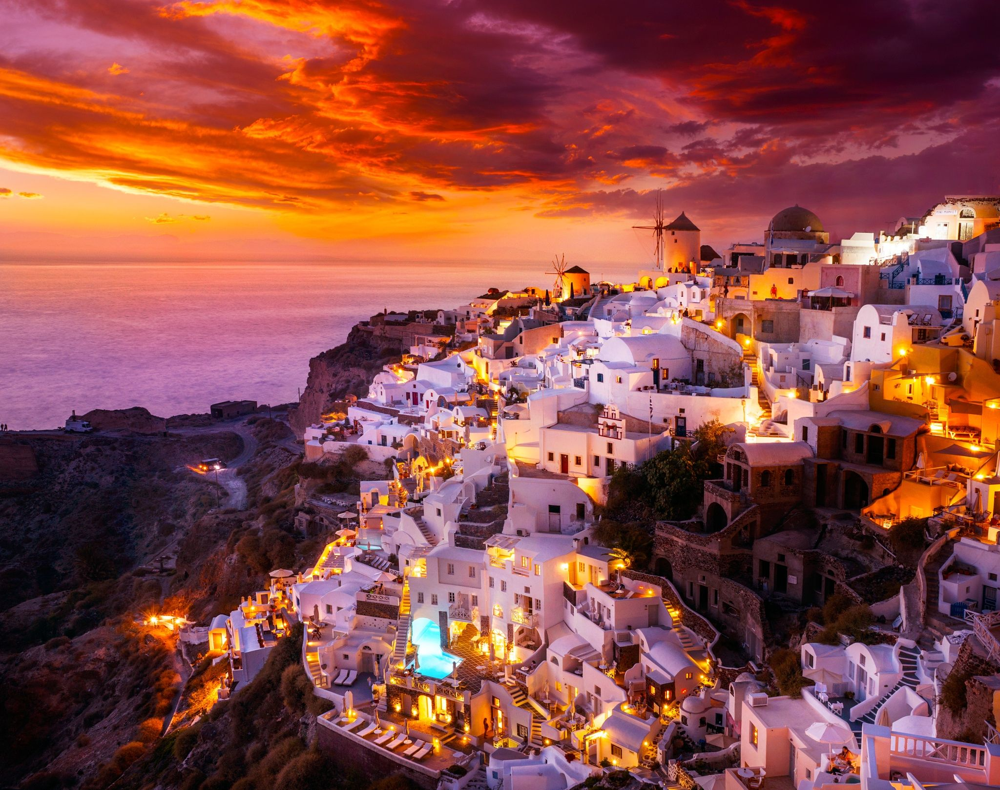
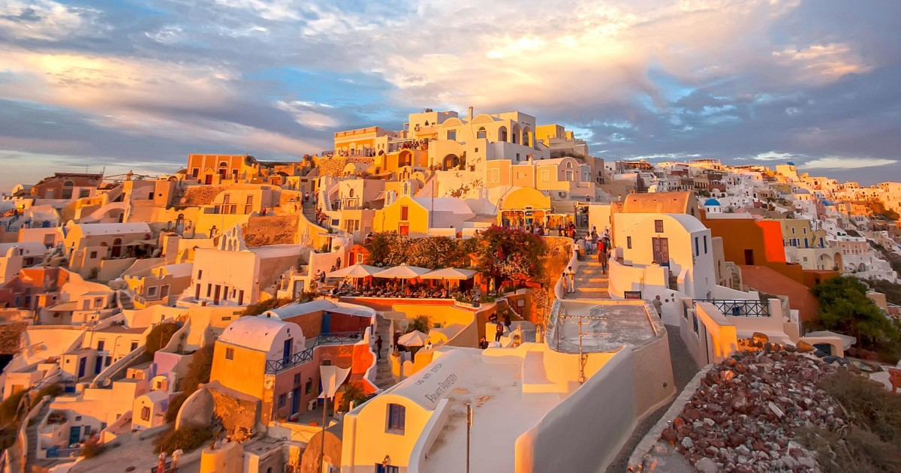
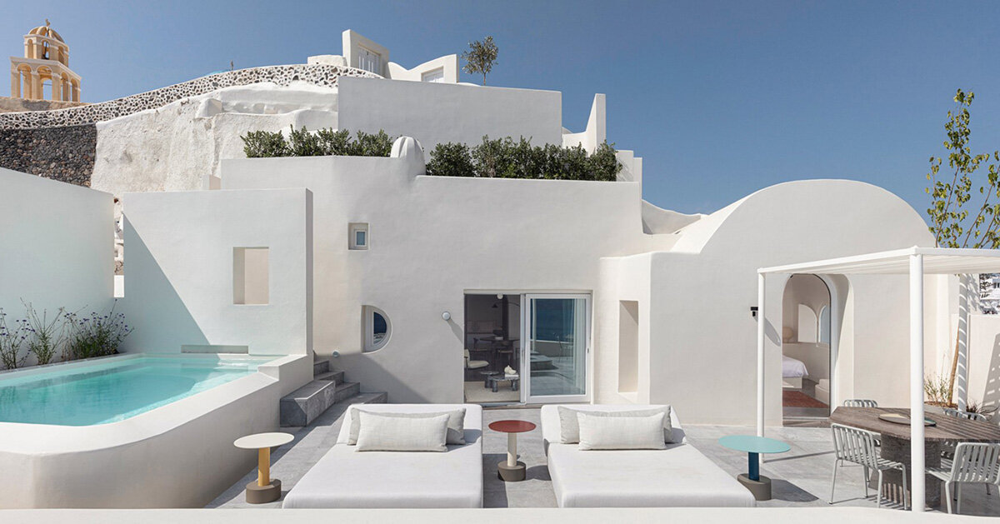
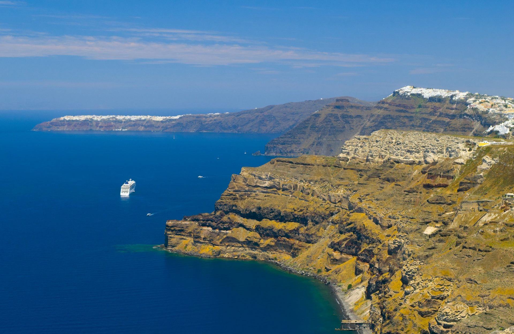
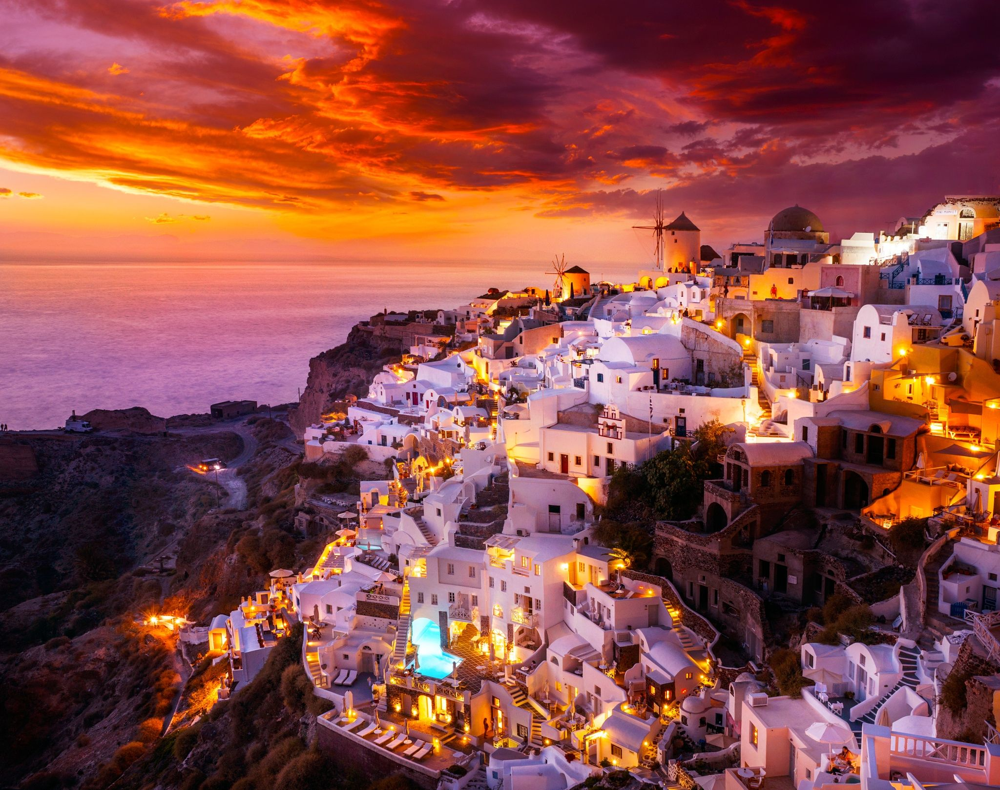

Santorini, Greece
 







The little island of Santorini in Greece is famous for its photogenic old blue-and-white
buildings, beautiful high end hotels with infinity pools, and sweeping views of the ocean.
Santorini is almost synonymous with luxury nowadays, but it’s also possible to travel the
island on a budget, and many of the best things to do in Santorini are free, such as
strolling
the historic towns, taking pictures, relaxing on the beach, and seeing the
sunset.
A trip to the Greek islands wouldn’t be complete without seeing Santorini for at least a few
days, and it’s easier than ever to get there from Athens and other major cities in Europe.
- Watch the sunset in Oia
- Swim at Red Beach
- Walk the Fira to Oia trail
- Enjoy Greek cuisine with sea views